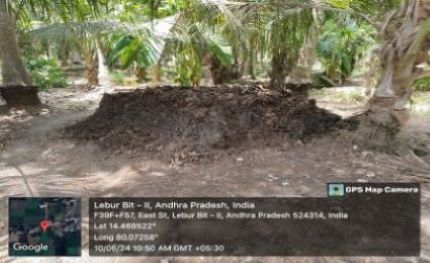

WEEKLY REPORT
WEEK- 5 (From 10-06-24 to 15-06-24)
Objective of the Activity Done: Educated community members on the principles and benefits of organic paddy farming:
Detailed Report:
Day 1:
- On this week we went to indukurpet -2 village which is cultivating the farms organically. In natural farming there is no ploughing, no tilling of soil and no fertilizers, and no weeding is done just the way it would be in natural ecosystems. Natural, farm-made pesticides like Dashparni ark and Neem Astra are used to control pests and diseases.
Day 2:
- >The government promoted the use of High yielding variety or HYV seeds.
- >It also provided fertilizers, pesticides and proper irrigation facilities to the farmers.
- >Promotion of modern technologies which can be easily incorporated in agriculture.
- >Intensification of cropping over cultivated land.
Day 3:
- I explained about the advantages of organic farming instead of using fertilizers and chemicals.
Day 4:
- I was satisfied seeing farmers using organic manure in their fields. Thus, I was successful in promoting organic farming.
Day 5:
- We visited nearby areas and grouped some villagers to create awareness. To encourage organic farming procedures, we made them understood the benefits of organic products. The people understood that the organic farming is better than the conservative farming.
Day 6:
- Applied organic fertilizers, such as organic compost or bio-fertilizers, to nourish the paddy crops. And continued monitoring the progress of the organic paddy crops, observing plant growth and tillering.
